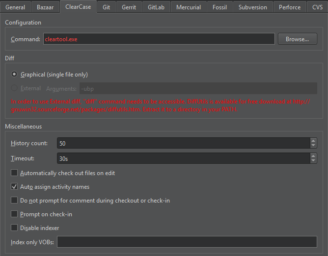

ClearCase
IBM Rational ClearCase is a version control, workspace management, parallel development support, and build automation solution developed by IBM. Use the ClearCase client plugin on Linux and Windows to access a ClearCase server.
Using GNU Diffutils with ClearCase
You can use the GNU Diffutils tool With ClearCase to compare files and activities:
- Download Diffutils and extract it to a directory in your PATH.
- Select Preferences > Version Control > ClearCase.

- Select the External radio button. The radio button is disabled if
diffis not in the PATH. - In the Arguments field, specify arguments for running
diff.
Checking out and Checking in
In addition to the standard version control system functions described in Use common VCS Functions, you can check out and check in files.
To create a writable copy of a file, select Tools > ClearCase > Check Out. If you check out files in a Unified Change Management (UCM) view, they are added to the change set of a UCM activity. By default, the activities are automatically assigned names. To disable this functionality, select Preferences > Version Control > ClearCase, and then deselect the Auto assign activity names check box.
To automatically check out files when you edit them, select the Automatically check out files on edit check box.
To cancel the checkout for a file and delete the checked-out version, select Tools > ClearCase > Undo Check Out.
To check in checked-out versions of files in the change set of the current UCM activity, select Tools > ClearCase > Check In Activity.
To create a permanent new version of the current file or all files in the versioned object base (VOB), select Tools > ClearCase > Check In. To confirm that you want to check in the files, select Preferences > Version Control > ClearCase, and then select the Prompt on check-in check box.
By default, you have to enter a comment when checking files out or in. To suppress this prompt, select Preferences > Version Control > ClearCase, and then select the Do not prompt for comment during checkout or check-in check box.
If you change the read-only attribute of a file that is loaded into a snapshot view and modify the file without checking it out, you hijack the file. To revert a hijacked file to its checked in version, select Tools > ClearCase > Undo Hijack.
By default, the files in the VOBs are indexed for quick access to their statuses. To disable indexing, select Preferences > Version Control > ClearCase, and then select the Disable indexer check box. To only have some VOBs indexed, specify them in the Index only VOBs field.
Specify the number of event records to show in History count.
Set a timeout for version control operations in Timeout.
See also Set up version control systems, Use common VCS functions, and Version Control Systems.